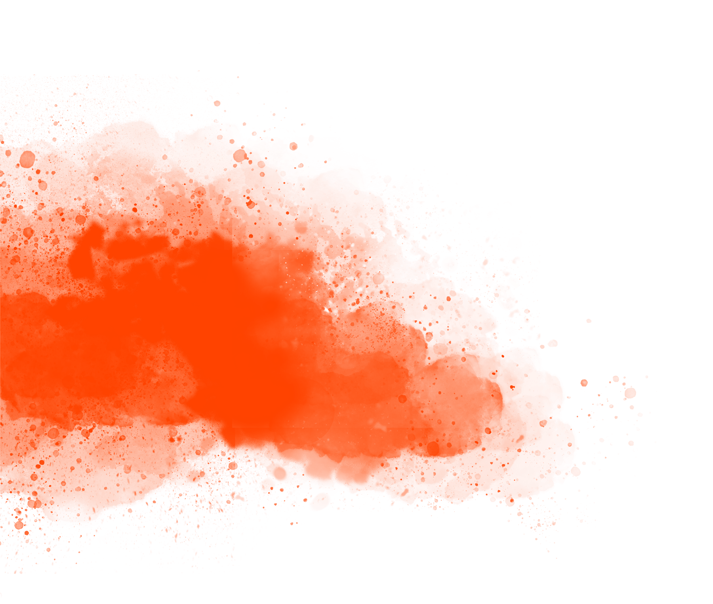
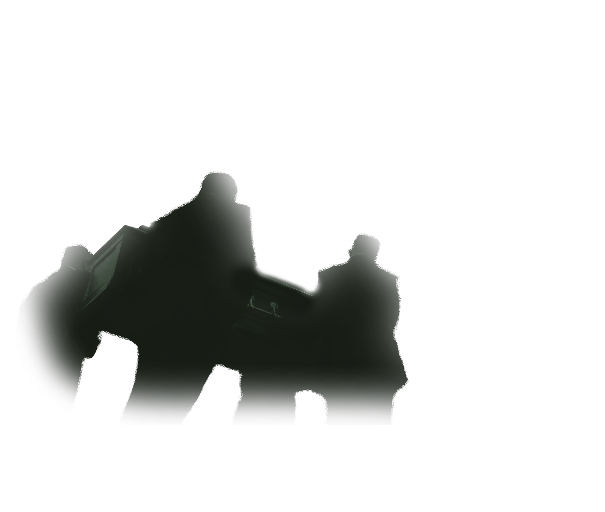
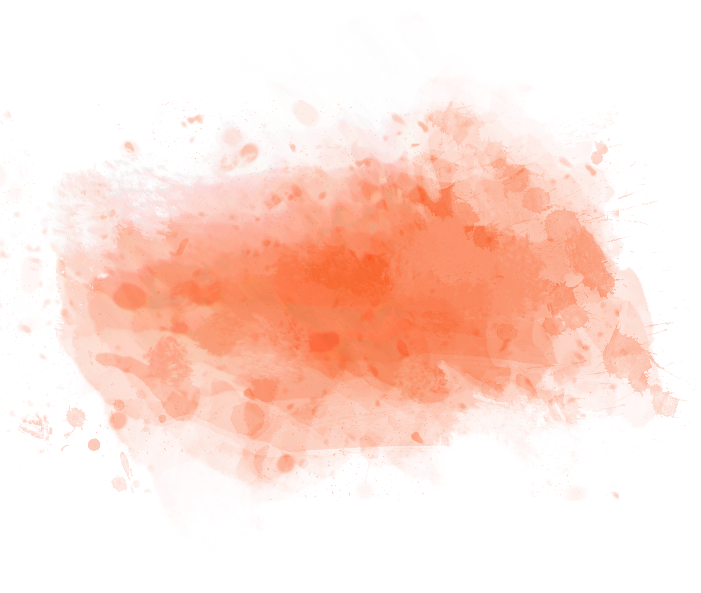
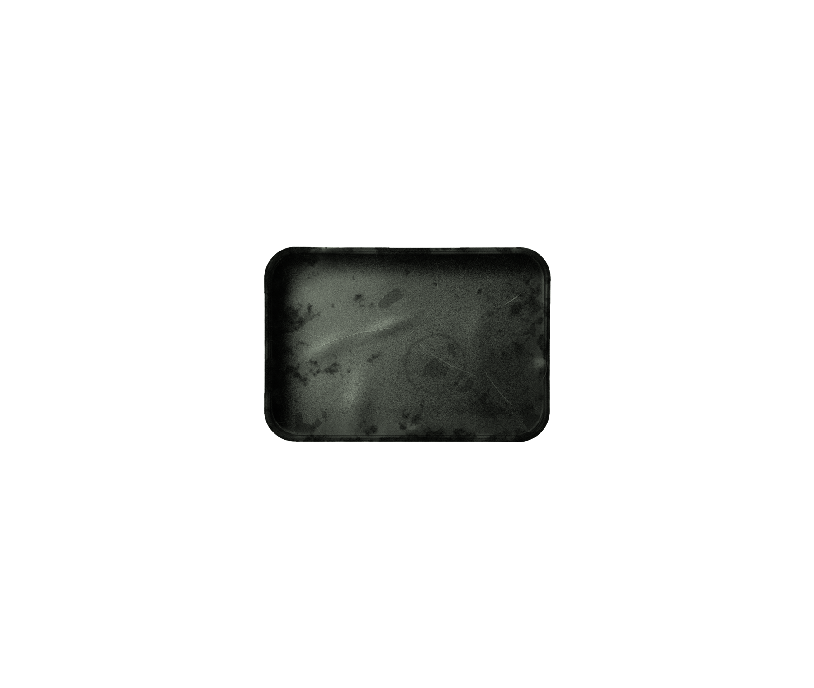
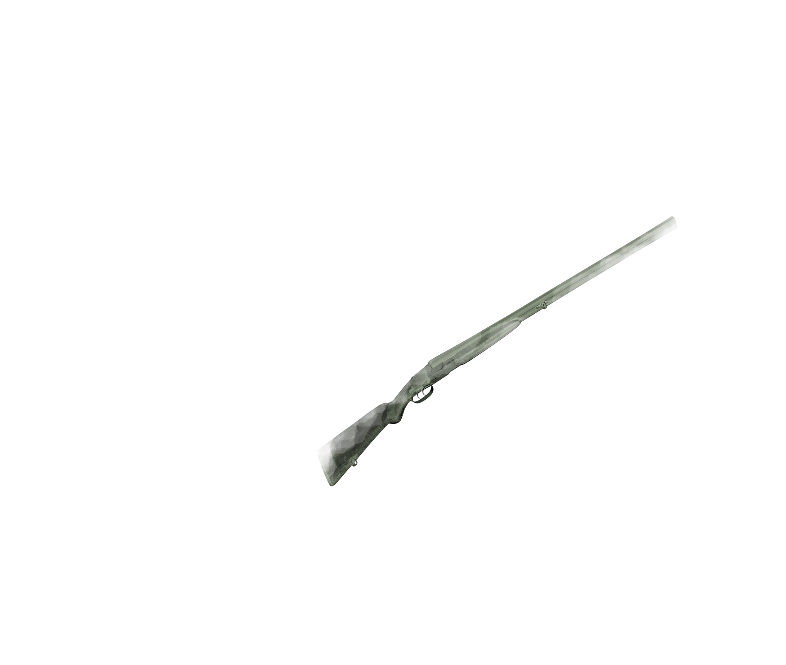
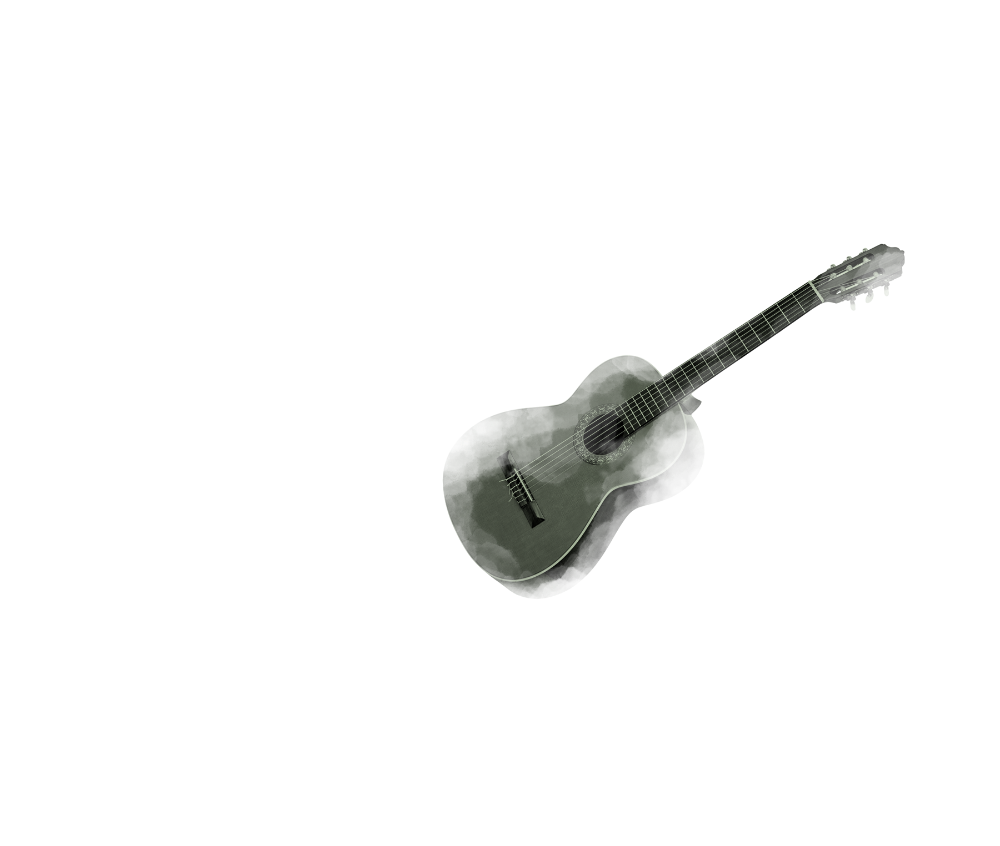
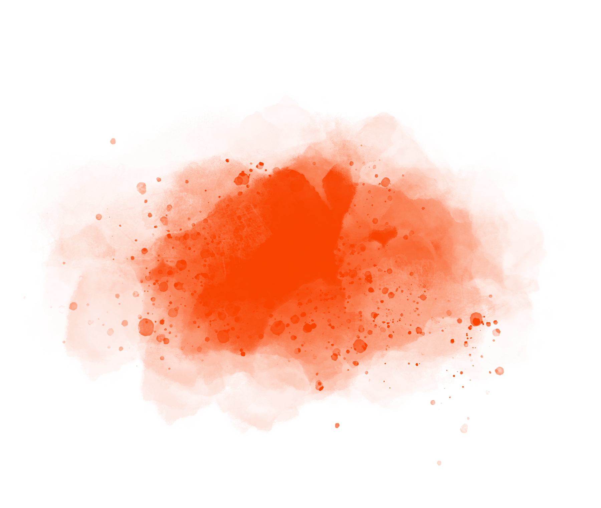
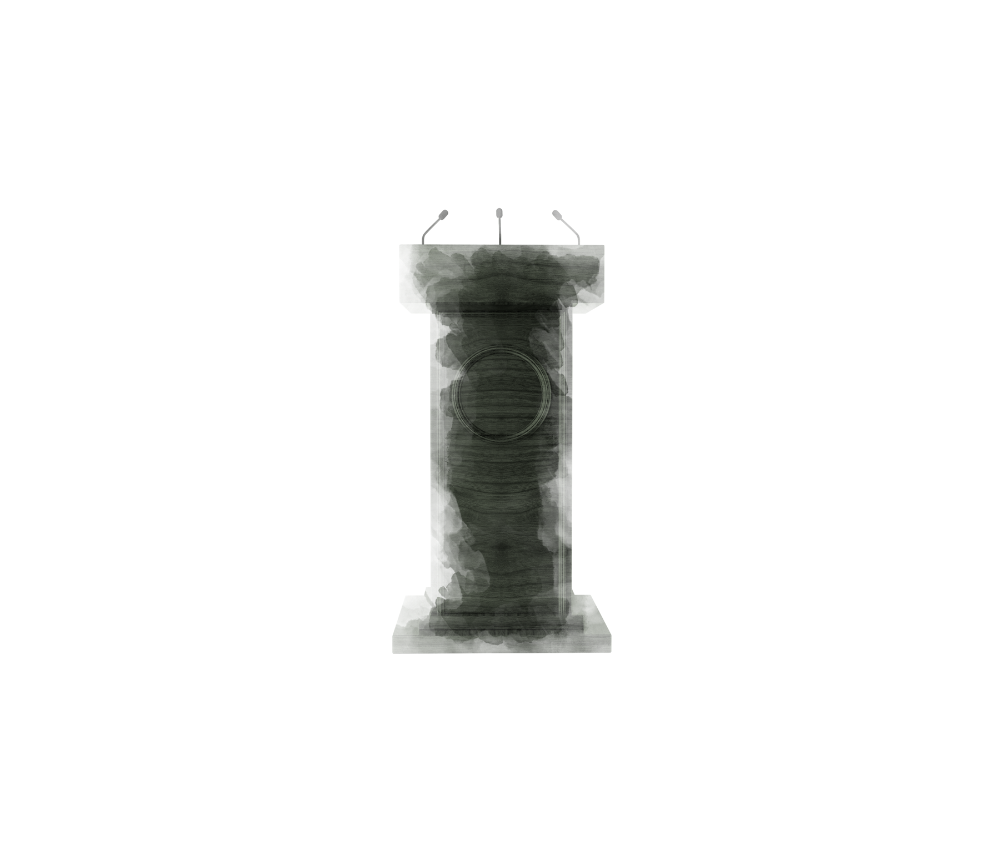
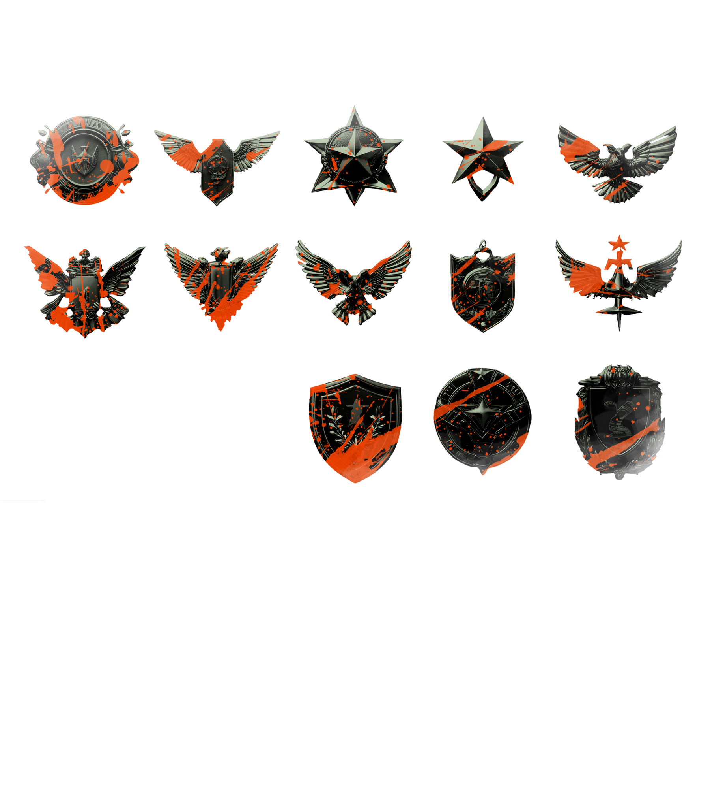

Our little army boy Is coming home from B.F.P.O.
Our little army boy Is coming home from B.F.P.O.


I've a bunch of purple flowers
To decorate mammy's hero


Mourning in the aerodrome
The weather warmer, he is colder


Four men in uniform
To carry home my little soldier






(What could he do?)
(Should have been a rock star)
But he didn't have the money for a guitar


(What could he do?)
(Should have been a politician)
But he never had
a proper education



(What could he do?)
(Should have been a father)
But he never even made it
his twenties
What a waste
Army dreamers